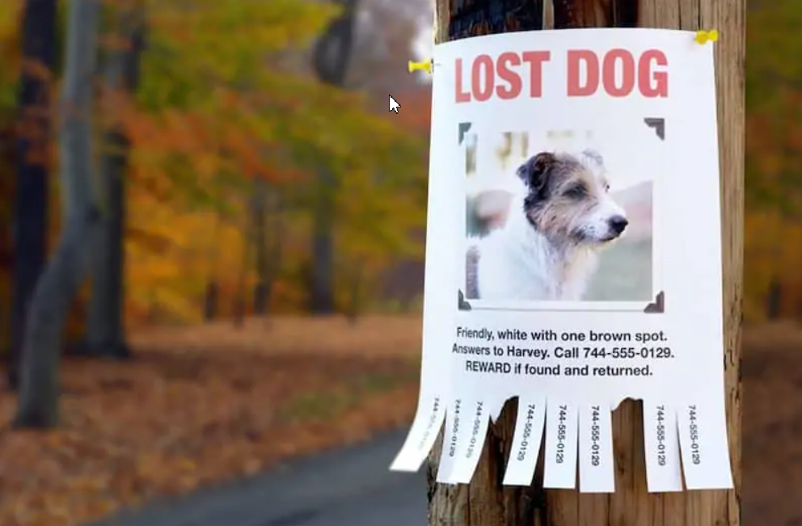

Pasos a seguir si se pierde una mascota
- Busca en casa y en lugares cercanos como rincones y escondites
- Pregunta a los vecinos.
- Crea carteles con la foto y la información de contacto.
- Contacta a los refugios y organizaciones locales de control anima.
- Utiliza luces y sonidos llamativos durante la noche para ayudar a que tu mascota te encuentre.
- Registra tu mascota como perdido en páginas de internet y redes sociales.
- Utiliza señuelos y olores familiares cerca de tu casa.
Recuerda que la clave es actuar rápido y difundir la información para aumentar las posibilidades de encontrar a tu mascota

Ejemplo cartel de perdida